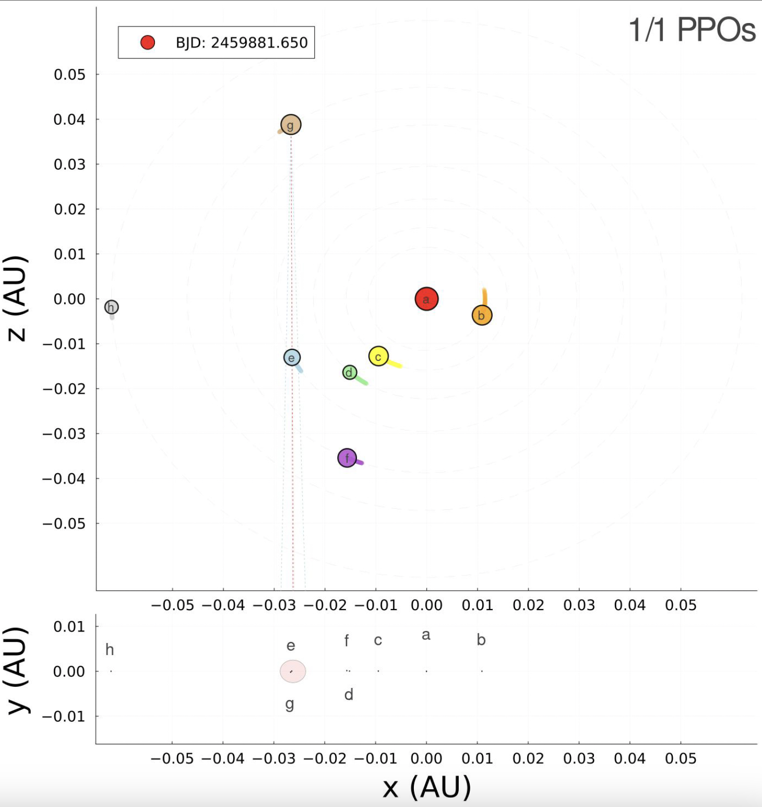

Astronomy and Astrophysics and Astrobiology
Update: I am defending my PhD on August 15th at 12pm EDT/9am PDT. The ~1 hr public talk is open to anyone. Feel free to reach out for a link if you would like to attend.
Following my successful defense I will be moving to Seattle to join the University of Washington as a postdoctoral scholar. I will be working with Jim Davenport on optical SETI research with LSST at the Vera Rubin Observatory,
and will continue my personal research on disintegrating exoplanets and high-resolution spectroscopy of ultra-hot jupiters.
I work with Prof. Jason Wright as a 5th-year graduate student in the Astronomy & Astrophysics Department at Penn State University,
working towards a PhD with a dual title in Astrobiology. My research primarily focuses on radio SETI and exoplanet science. My SETI interests are in proof of concept search techniques and analysis of high frequency resolution radio
data to look for narrowband signals of non-anthropogenic origins, distinct from known astrophysical phenomenon and indicative of technologically produced emission. My exoplanet science centers on characterizing the dusty effluents
of a disitegrating exoplanet using JWST's MIRI instrument to conduct mid-IR transmission spectroscopy of K2-22b. The aim of this research is to identify the building blocks of a terrestrial sized planet and gain a deeper
understanding of the building blocks of rocky worlds in service of teasing out the possible substrates for life in the universe. I am also a 2025 NASA ExoExplorer,
and a Visiting Graduate Research Fellow at IPAC.
I am currently working with Aurora Kesseli on high-resolution data from KPF on Keck and ESPRESSO on the VLT to characterize the atmospheric composition of an ultra-hot jupiter, WASP-82b, using transmission spectroscopy.
Affiliations:
The Penn State Extraterrestrial Intelligence (PSETI) Center
The Center for Exoplanets and Habitable Worlds (CEHW)
The Astrobiology Research Center
(Last updated July 2025)
Exoplanet Research
K2-22b: A Disintegrating Exoplanet with JWST
Using the MIRI LRS instrument on JWST we observed 4 predicted transits of K2-22b.
This project uses transmission spectroscopy to determine the composition of the dust cloud around this disintegrating exoplanet and ultimately measure the interior composition of a terrestrial planet around a main sequence star for the first time!
Observations were taken in April 2024.
Paper published in ApJ Letters and updated on arXiv in July 2025.
The thumbnail image is a MIRI verification image with the direction of dispersion (DoD) included. In the embedded picture, the bottom left simulation is from the discovery paper (Sanchis-Ojeda et al. 2015) and the top left plot is my recreation of the K2 lightcurve.
The plot on the right is the main results figure from our paper.

AAS #245 Press Briefing on K2-22b
At the 2025 Winter AAS Meeting in National Harbor, MD, I gave a press briefing on the results of our JWST observations of K2-22b!
Clicking the video will show the recorded livestream video of the press briefing, with my ~6 minute talk starting at 35:39, followed by questions for the entire panel.
Additionally, we wrote up our own press release document for the event in coordination with our colleagues at MIT
who were reporting on a new TESS discovery of a similarly disintegrating exoplanet! (Watch Marc Hon's talk right before mine in the press briefing and check out his paper)
SETI Research

SETI during PPOs in TRAPPIST-1 with ATA
Searching for narrowband transmission in observations of TRAPPIST-1 with the ATA, with particular focus on planet-planet occultation events.
Paper published in AJ and on arXiv in September 2024.
The embedded gif is a simulation I created showing the orbital configuration of the TRAPPIST-1 planets during the observations we took for this search.
SETI at the Solar Gravitational Lens Focal Region
A proof of concept experiment for a new search strategy conducted by the Fall 2020 Graduate SETI class.
Paper published in AJ and on arXiv in August 2022.
The thumbnail image is a conceptual rendering by Dani Zemba at Penn State
Science News Articles
Jan 30, 2025 Forbes via Apple News:
Astronomers Orbiting TRAPPIST-1 Star Could Be Peering Back At Earth, by Kevin Holden Platt
Jan 28, 2025 EOS:
Scientists Finally Get a Good Look at a Disintegrating Exoplanet, by Javier Barbuzano
Jan 19, 2025 BBC:
Planetary alignment 2025: This is what it really means when seven planets line up in the sky, by Jonathan O'Callaghan
Jan 16, 2025 Science News:
A crumbling exoplanet spills its guts, by Lisa Grossman
Sep 24, 2024 New Scientist:
Search for alien transmissions in promising star system draws a blank, by Jonathan O'Callaghan
Jan 20, 2023 Live Science:
Is the sun a node in a gigantic alien space internet? Scientists scanned the skies to check, by Adam Mann
Jan 18, 2023 The Economist:
Ideas for finding ET are getting more inventive, by Bas den Hond
Sep 15, 2022 The New York Times:
The Search for Intelligent Life Is About to Get a Lot More Interesting, by Jon Gertner
Get In Touch
The best way to reach me is currently via e-mail:
{kind=link}
{kind=link}
{kind=link}